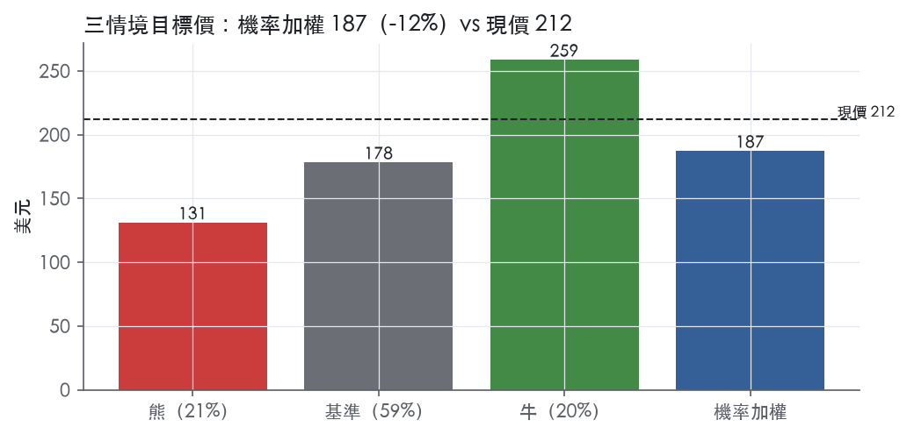
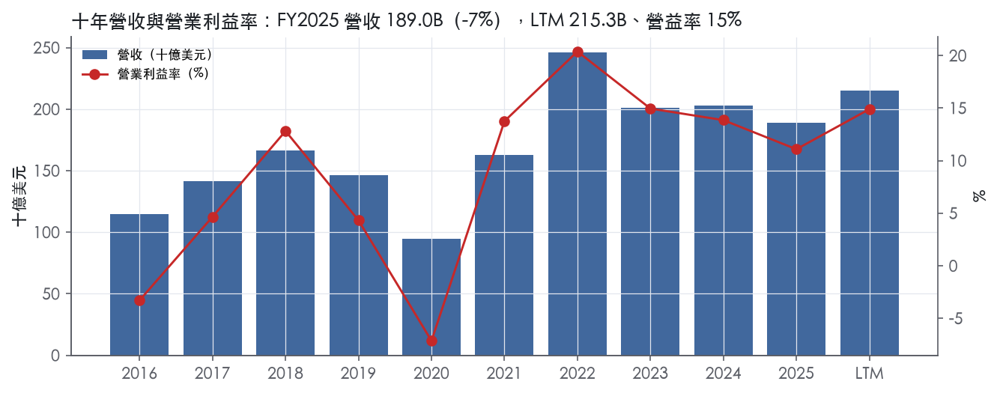
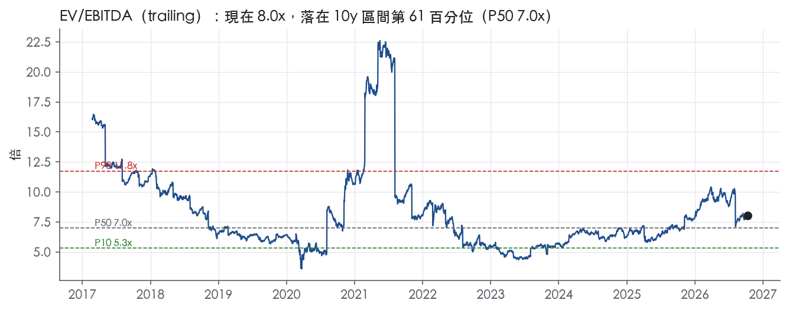
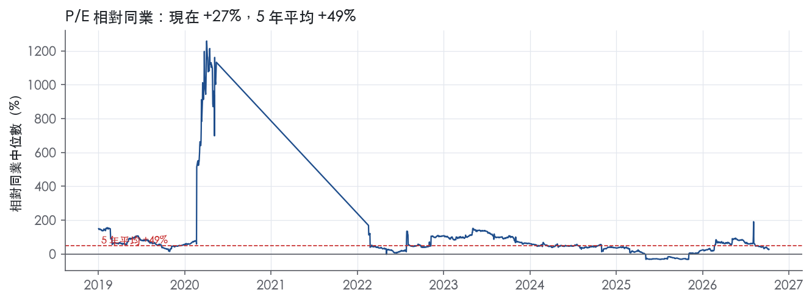
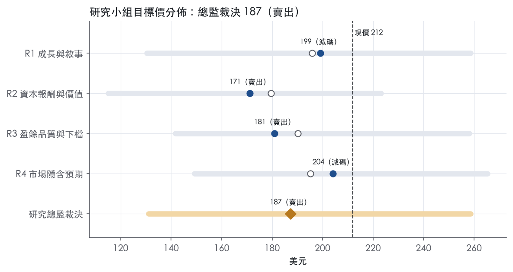
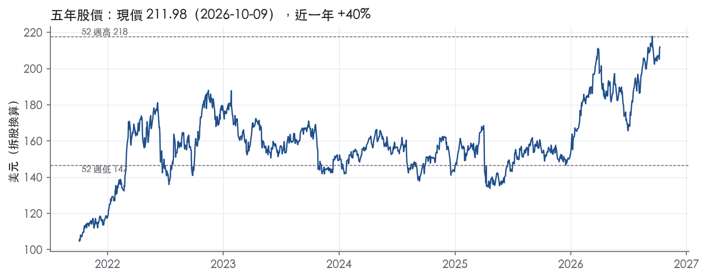

評等總表 › 能源 › CVX
量增為真但油價尖峰已入價，看空｜評等 賣出｜目標價 187
| 報告日 | 評等 | 目標價 | 當時股價 | 超額報酬 |
|---|---|---|---|---|
| 2026-10-09 | 賣出 | 187 | 212 | -18.6% |
| 評等 | 賣出 |
| 12 個月目標價 | 187 美元 |
| 現價 | 211.98 美元（2026-10-09） |
| 預期報酬 | 股價 -11.7%＋股息 3.3%＝總報酬 -8.3%；同業籃門檻 10.2%，超額 -18.6% |
| 估值方法 | EV/EBITDA 7.0x，套在三年平均的EBITDA |
| 三情境 | 熊 131／基準 178／牛 259 |
| 研究流程 | 四位研究員兩輪辯論＋研究總監裁決 |
| 資料來源 | SEC EDGAR XBRL、Tiingo、FRED（全免費） |
量增為真但油價尖峰已入價，看空（研究總監裁決，四位研究員兩輪辯論後）
評等 賣出｜12 個月目標價 187 美元（總監三情境機率加權 184 與研究員中位數 190 各半）｜現價 211.98（2026-10-09）
預期報酬：股價 -11.7%＋股息 3.3%＝總報酬 -8.3%。同業籃門檻 10.2%，超額 -18.6%。
估值方法：EV/EBITDA 7.0x，套在三年平均的EBITDA。三情境：熊 131（21%）／基準 178（59%）／牛 259（20%）。
什麼會讓研究總監改變看法：若首個Brent≤75的季度營益率≥13.5%，或Brent約70時市場仍付trailing 8.0x以上，代表中循環與倍數錨都比我估的高，上修倍數至7.5–8.0x並轉中性。
| 過去四季（實際，FY2026Q2） | 未來四季 | 第 5–8 季 | 第 9–12 季 | |
|---|---|---|---|---|
| 營收（B） | 215.3B | 223.9B | 210.4B | 216.8B |
| 營收成長 | 10.2% | 4.0% | -6.0% | 3.0% |
| 營業利益率 | 14.9% | 14.0% | 12.0% | 12.0% |
| EPS（美元） | 10.53 | 10.76 | 8.70 | 9.11 |
| EPS 成長 | 36.6% | 2.2% | -19.1% | 4.8% |
| 每股股息（美元） | 6.98 | 6.98 | 6.98 | 6.98 |
| P/E（現價） | 20.1x | 19.7x | 24.4x | 23.3x |
| 股息殖利率（現價） | 3.3% | 3.3% | 3.3% | 3.3% |
過去四季為申報數字；預測為研究總監的假設、程式計算。倍數與殖利率都用現價計算，用來看現價對應各期獲利的高低。
| 情境 | 機率（歷史） | 故事 | 未來四季營收成長 | 第 5–8 季營益率 | 倍數 | 目標價 | 股價漲跌 |
|---|---|---|---|---|---|---|---|
| 熊 | 21%（18%） | 對應風險表第1、2條：停火使Brent跌至約57、低於4Q25實測的64，裂解價差收縮、固定成本去槓桿、回購縮手；倍數由R3的7.5x改為R4的7.0x（尺套三年平均而非trailing低谷） | -8.0% | 9.0% | 7.0x | 131 | -38.2% |
| 基準 | 59%（61%） | Brent 80/70/70，產量升至4,250 MBOED，3B降本與1.5B綜效使中循環營益率12%高於FY2025的11.1%，倍數回自家十年中位 | 4.0% | 12.0% | 7.0x | 178 | -15.9% |
| 牛 | 20%（20%） | 中東供應長期受損，Brent 90/85/85，量增抵銷小幅回落，降本全數留存，市場把85當新中循環維持現行8.0x；微調D&A 11%與股數−2.5%取自R3牛情境 | 10.0% | 15.0% | 8.0x | 259 | 22.0% |
目標價由程式依研究總監的驅動與倍數計算；機率由研究總監給定。括號內是歷史頻率：把這檔股票過去十年 12 個月報酬的波動形狀，置中在基準情境，結果落在各情境附近的比例。

四位研究員用不同方法各自估值，回應研究總監的質疑後交出第二輪，最後由總監逐點裁決。各研究員的主張見第七章，裁決理由見第八章，完整論證見《研究底稿》。
| 立場（一輪→二輪） | 加權目標價（一輪→二輪） | 評等（一輪→二輪） | 第二輪倍數 | 熊～牛目標價 | |
|---|---|---|---|---|---|
| R1 成長與敘事 | 中性→看空 | 196→199 | 減碼→減碼 | 7.5x | 130～259 |
| R2 資本報酬與價值 | 看空→看空 | 180→171 | 賣出→賣出 | 7.0x | 115～223 |
| R3 盈餘品質與下檔 | 看空→看空 | 190→181 | 賣出→賣出 | 7.0x | 142～258 |
| R4 市場隱含預期 | 看空→看空 | 195→204 | 減碼→減碼 | 7.5x | 149～265 |
| 研究總監裁決 | 看空 | 187 | 賣出 | 7.0x | 131～259 |
目標價由程式依各自的驅動與倍數計算；評等＝機率加權總報酬 − 同業籃門檻。
Chevron 是一家垮垂直整合的全球能源公司，核心是上游油氣生產與下游煉油、化工、行銷。公司自我定位為「世界領先的整合能源公司之一」，生產原油與天然氣；製造運輸燃料、潤滑油、石化產品與添加劑；並開發提升業務與產業的技術¹。公司目標是成長油氣業務、降低營運碳強度、並發展新能源業務¹。客戶端是全球煉油廠、終端消費者（加油站、航空燃油、潤滑油）與工業用戶（石化、電力），近期並新增資料中心電力客戶。Chevron 直接或間接子公司與關係企業在安哥拉、阿根廷、澳洲、巴西、加拿大、哈薩克、蓋亞那、以色列、奈及利亞、沙科中立區、菲律賓、新加坡、英國、美國與委內瑞拉等國從事重大業務活動²。
公司分為上游（Upstream）、下游（Downstream）與「All Other」三大報表分部²。上游盈利高度連動原油、天然氣與天然氣液（NGL）的產業價格，這些價格受OPEC+行動、全球經濟需求、地緣政治衝突等公司無法控制的因素影響²。FY2025 全年上游盈利為 12,822M 美元（美國 5,815M＋國際 7,007M），下游盈利為 3,022M 美元（美國 1,375M＋國際 1,647M），All Other 虧損 3,545M 美元²。下游盈利緊繫於汽油、柴油、航空燃油、潤滑油、燃料油、添加劑、石化產品與可再生燃料的煉製、製造與行銷利潤率²。公司最重要的行銷區域是美國西岸、美國灣岸與亞太地區，在這些地區均有煉油廠的經營權或重大持股²。「All Other」涵蓋全球現金管理與債務融資活動、公司行政職能、保險業務、不動產活動與科技公司²。FY2025 全年淨採油氣當量產量為每日 370 萬桶，較 2024 年成長 12%，主要因收購 Hess 及 TCO、Permian Basin、Gulf of America 的增產²。公司 2025 年底證實儲量達 106 億桶油當量，儲量替補率 158%²。上游明顯是盈利主引擎，FY2025 占總淨利（對應年度營收 189.03B）逾八成，下游在 FY2025 貢獻盈利 3,022M 美元，仍相對次要。
地理上公司以美國本土與國際（主要中東、非洲、哈薩克、拉美）為兩大上游報表區塊，國際上游 FY2025 淨採油氣當量產量為每日 186.5 萬桶，美國為 185.8 萬桶，兩者相當²。下游通路以美國灣岸與西岸煉油及加油站零售為主，國際下游則透過合資煉油廠（如韓國 GS Caltex、Chevron Phillips Chemical）銷售。LNG 出口部分，澳洲 LNG 項目的權益產量多數已簽訂長期合約，部分售予亞洲現貨市場²。委內瑞拉業務因美國制裁政策，自 2020 年起以非股權投資方式記帳，僅在收到現金時認列收入，產量與儲量不計入公司財報²。客戶集中度方面 10-K 未揭露個別客戶占比。
FY2025Q3（2025-09-30）營收 49.73B，EPS 1.82（is/cf.* FY2025Q3），公司完成 Hess 收購整合、國際合資架構擴張。FY2025Q4（2025-12-31，推導）營收 46.87B，EPS 1.49，全年股息連續 38 年增長，年度股息 6.84 美元²。FY2026Q1（2026-05-01發布）報告盈利 2.2B 美元（稀釋每股 1.11 美元），較 FY2025Q1 的 3.5B 美元（每股 2.00 美元）下滑，主因約 2.9B 美元不利時間效應（衍生品按市值計價與 LIFO 存貨會計的時間錯配）³。該季全球與美國產量分別成長 15% 與 24%，美國產量連續第三季超過每日 200 萬桶油當量，公司返還股東 6.0B 美元現金，連續 16 季超過 5B 美元³。FY2026Q2（2026-07-31發布）盈利躍升至 12.1B 美元（稀釋每股 6.11 美元），資本運用報酬率達 21%，美國產量創紀錄，全球產量年增 20%，美國煉廠原油裝置利用率達 97%¹。該季並與 Microsoft 簽署 20 年期電力協議，為西德州資料中心提供電力¹。公司在該季達成結構性成本削減目標（提前六個月，年化 3B 美元節省）及 Hess 收購協同效應 1.5B 美元（超出原目標 50%）¹。公司未在新聞稿中給出下一季明確財務指引數字，僅重申資本紀律與長期價值創造的策略方向¹。
公司目標是成長油氣業務、降低營運碳強度、並發展新能源業務¹。為發展新能源業務，公司計畫運用自身能力、資產、合作夥伴關係與客戶關係²。公司估計 2026 年淨採油氣當量產量將較 2025 年成長 7% 至 10%（假設布蘓特原油每桶 60 美元，排除預期資產出售），其中包含 Hess 資產全年貢獻²。公司目標在 2028 年底前實現 3–4B 美元的結構性成本削減，主要來自組合優化、科技提升生產力、全球能力中心擴大運用²；FY2026Q2 已達成年化 3B 美元節省，提前達標¹。公司過去五年目標資產出售 10–15B 美元（截至2028），2024年至2026年1月已實現約 9B 美元，未來展望每年 1–2B 美元資產出售收益至 2030 年²。公司並計畫提供電力解決方案支持美國資料中心成長，首個項目在西德州開發，已與 Microsoft 簽署 20 年期購電協議提供 2.67 吉瓦電力¹。公司認為未來能源是低碳的，但多數已發布的展望結論認為化石燃料在未來多年仍將是能源系統的重要組成部分²；公司已表示其 2050 年上游生產淨零目標未按軌道達成，將不再以 2050 年為時間表²。整體來看，Chevron 的成長敘事高度依賴 Hess 整合後的 Permian、Gulf of America 與蓋亞那產量放量，加上資料中心供電作為新的現金流來源，而非真正的能源轉型業務貢獻。下游利潤率受地緣政治（中東衝突造成的供應中斷）干擾明顯，國際下游波動性高於美國下游。公司資本配置紀律（成本削減、資產出售、股票回購）短期內對自由現金流的支撐比產量成長更立竿見影。

Chevron 沒有經濟護城河：十年 ROIC 平均低於資本成本，我們沒有把握它未來 5 年能穩定賺到超額報酬。公司確實握有低成本資源與規模資產，但這些優勢只在油價高檔時轉成超額報酬，景氣一回落就被商品價格吃掉。Hess 整合與結構性降本讓資產品質改善，不過同期資本基礎也同步擴大，所以我們把趨勢判為穩定，而不是變寬。
Chevron 的優勢只有兩類，而且都只停留在資產層級，沒有形成產業層級的定價權：成本優勢與效率規模。
成本優勢：低成本、長壽命的上游資產是公司最主要的優勢。原文寫道，Permian Basin 產量成長逾 10%、資本支出低於前一年，產量達到每日一百萬桶油當量²。哈薩克 Future Growth Project 投產後，Tengiz 總產量拉升到每日約一百萬桶油當量²。下游方面，美國煉油廠吞吐量創 20 年新高，原因是擴建專案與效率改善²。公司宣布要在 2026 年底前達成 3–4B 美元的結構性成本削減，2025 年已實現 1.5B 美元，年化達 2B 美元²。
效率規模：少數長約與基礎設施資產有局部排他性，但規模不足以撐起全公司的報酬。澳洲自營 LNG 專案的權益產量多數已簽訂具約束力的長期合約²。公司持有 Caspian Pipeline Consortium 股權，這條管線是 Tengiz 原油的主要出口路線²。在以色列，公司持有 Leviathan 39.7% 與 Tamar 25% 權益²。
無形資產、轉換成本與網路效應都找不到證據，因此不列入。最根本的限制來自公司自己的說法：上游業績最重要的影響因素是原油價格，而油價由公司無法控制的全球市場決定²。
量化底稿不支持任何護城河主張，數字與「成本優勢」的敘事明顯衝突。ROIC 十年平均 8.0%，低於資本成本代理值 10.2%，差距為 -2.2%。在有 ROIC 資料的 9 年中，只有 3 年高於資本成本，這三年剛好落在 FY2021 至 FY2023 的油價高檔期，ROIC 分別為 9.5%、21.3%與 12.7%。ROIC 標準差 6.5%，最低 -2.9%、最高 21.3%；營業利益率標準差 8.2%，區間從 -7.1% 到 20.4%，這是典型的價格接受者型態。
毛利率標準差只有 2.4%，但這不代表有定價權。理由是營收和外購原油成本會隨油價同步漲跌，毛利率因此被機械性地拉平。
有兩個因素讓我們沒有把評級定得更嚴苛，但也不足以上修。
第一，資本成本代理值用的是目前 10 年債 5.22%，這個利率偏高，會放大 ROIC 與資本成本之間的缺口。
第二，最新一年 ROIC 6.9%落在 Hess 併購入帳的年度。Hess 占合併總資產的 24%，卻只占營收的 3%²。這代表分母先膨脹，盈餘還沒跟上。即使把這兩點都考慮進去，十年裡仍有六年報酬低於資本成本，「無」的評級維持不變。
最大的侵蝕風險是資源替補不足，其次是政策與地緣政治。
資源替補：2025 年的儲量替補率為 158%，但 5 年與 10 年替補率分別只有 91% 與 95%²。長期替補不到 100%，代表低成本資源庫要靠併購補充，而併購會推高投入資本。
OPEC+ 配額：2025 年約 21% 的淨油當量產量來自 OPEC+ 成員國²，這部分產量受配額左右，公司無法自主決定。
地緣政治：CPC 曾遭遇無人機攻擊等事件，對 Tengiz 及公司未來業績可能造成負面影響²。
減碳政策：相關合規政策已經、也可能持續對公司造成負面影響，包括碳氫產品被取代與資產減損²。
除役負債：公司過去出售資產時一併轉出的除役義務已經回流，2025 年支出 297M 美元，預計到 2033 年前每年再支出 200–300M 美元²。
目標倍數相對同業不應給溢價，以持平為上限。現在的本益比 20.1x（px/band.pe 現在）高於 5 年中位數 15.4x，EV/EBITDA 8.0x 也落在 5 年第 79.3 百分位（現在分位），市場已經用高檔倍數反映高檔油價下的盈餘。估值應以中循環 ROIC 搭配歷史中位倍數評價，不應把 FY2026Q2 這類景氣高峰的報酬外推，也不應假設超額報酬能延續超過 5 年。
| 指標 | 最新 | 十年平均 | 標準差 | 最低 | 最高 |
|---|---|---|---|---|---|
| ROIC | 6.9% | 8.0% | 6.5% | -2.9% | 21.3% |
| 毛利率 | 42.8% | 43.7% | 2.4% | 40.7% | 48.2% |
| 營業利益率 | 11.1% | 8.5% | 8.2% | -7.1% | 20.4% |
| FCF 利潤率 | 8.8% | 7.5% | 5.4% | -4.7% | 15.3% |
| ROE | 7.3% | 9.0% | 7.3% | -4.0% | 23.8% |
程式計算。資本成本代理值（10 年債＋5%）：10.2%；ROIC 平均減資本成本：-2.2%；ROIC 有資料的 9 年中，高於資本成本 3 年。
營業現金流／淨利 LTM 2.20x、近三年平均 2.07x，皆為綠燈，顯示帳上淨利有紮實的現金支撐。應計比率 LTM -7.5%、近三年 -6.1%，遠優於紅燈門檻 5.0%，代表盈餘並非靠應計項目堆出來。淨負債／EBITDA LTM 僅 0.49x，10 年平均也只有 1.16x，槓桿非常低。唯一的黃燈是存貨成長超過營收成長 13.8 個百分點，以及程式標出的 FY2020→FY2021 淨利率跳動 15 個百分點，兩者都可用油價循環與庫存建倉解釋，不構成盈餘品質的結構性問題。
現金持續跑在淨利前面，LTM 現金流／淨利兩項指標都站在 1 倍以上的綠燈區。LTM 營業現金流／淨利 2.20x、自由現金流／淨利 1.31x，近三年平均分別為 2.07x 與 1.04x，皆符合綠燈標準。10 年平均營業現金流／淨利卻是 -0.43x，這是 FY2020 淨損 -5.54B 但 CFO 仍為正 10.58B 所拉歪的歷史平均，不代表近期體質惡化（資料包年度表）。最新一季（2Q26）CFFO 為 22.6B 美元，但 CFFO Excluding Working Capital 僅 19.7B 美元，兩者落差 2.9B 美元主要來自營運資金效應，屬於單季波動而非盈餘灌水¹。新聞稿明確點出本季現金流走高「due to record U.S. production with higher commodity prices, increased cash distributions from Tengizchevroil LLP, and favorable working capital effects」¹。
2Q26 GAAP 淨利 12.1B 美元（每股 6.11 美元稀釋），調整後淨利 12.0B 美元（每股 6.06 美元稀釋），差距主要來自資產出售利得 230M 美元與退休金清算成本 86M 美元，外匯影響則讓盈餘減少 49M 美元¹。資產出售利得屬於一次性、不應計入持續性盈餘，退休金清算成本同樣是非經常性項目，兩者加回調整方向合理。自由現金流方面，公司同時揭露 FCF 18.1B 美元與 Adjusted FCF 15.4B 美元，差額 2.7B 美元同樣來自營運資金效應的扣除¹。公司並未在本季調整項目中揭露 SBC 加回金額，底稿也缺 SBC／營收數據，因此本章無法對股權薪酬的盈餘稀釋效果做量化判斷。整體來看，GAAP 與非 GAAP 差距規模相對淨利基數很小（230M + 86M 美元對比 12.1B 美元淨利），調整不會實質改變盈餘品質的結論。
槓桿低且本季大幅去化，淨負債 27.09B 美元、EV 445.92B 美元，淨負債／EBITDA（LTM）僅 0.49x。公司本季總債務下降，新聞稿稱「Total debt was reduced by a record $8.4 billion in the quarter」¹，對照資料包總債務從 FY2026Q1 的 39.60B 降至 FY2026Q2 的 36.67B（資料包最近八季表）。利息保障倍數 LTM 22.5x、近三年平均 42.9x，付息能力極強，完全不受利率環境（UST10y 5.22、HY OAS 3.15）牽動。股東回饋方面，（股利＋回購）／淨利 LTM 為 121.4%、近三年平均 159.3%，數字超過 100% 看似在舉債回饋股東，但對照同期淨負債／EBITDA 持續低於 1.5x 且本季還在降債，顯示回饋並非以犧牲資產負債表為代價。稀釋股數年變動 LTM -0.5%、近三年 -1.4%，回購持續淨減少股數，與股東回饋比率互相印證。
計分表本身沒有任何紅燈，只有一個黃燈與一條程式標出的歷史紅旗，以下逐條回應。
存貨成長 − 營收成長（FY2025）+13.8pp，黃燈：此為營運資金科目的相對變化，資料包未提供存貨絕對金額可供進一步拆解，但 2Q26 新聞稿顯示公司正處於煉油端高產出、高庫存周轉狀態（美國煉油廠原油投入量創紀錄、利用率 97%），存貨成長可能反映原油與煉製品庫存隨營運規模擴張同步增加，屬於經營活動擴張帶來的正常現象，而非盈餘虛增的訊號¹。由於缺乏存貨週轉天數或絕對金額數據，本章將此列為「可解釋但待觀察」，不足以單獨拉低整體評級。
淨利率 FY2020→FY2021 跳動 +15 個百分點，程式紅旗：這是一次性基期效應，FY2020 淨利為 -5.54B 美元（受全球疫情期間油價崩跌拖累），FY2021 回升至 15.62B 美元，營益率同期也從 -7.1% 翻轉至 13.8%（資料包年度表）。這是油價景氣循環底部到復甦的正常反彈，不是會計操作或盈餘品質惡化的訊號，屬於可解釋的一次性／宏觀因素。
SBC／營收無資料：底稿未提供 SBC 占營收比率，因此無法對股權薪酬侵蝕盈餘的程度做評分，列為資料缺口而非紅燈，建議估值研究員在模型中對此留一道彈性空間。
盈餘品質整體偏高，估值可以用 GAAP 盈餘為主軸，不需要對 LTM 10.53 美元的 GAAP 稀釋 EPS 做大幅折價（資料包快照）。2Q26 調整後 EPS 6.06 美元與 GAAP EPS 6.11 美元差距很小，非 GAAP 調整項目（資產出售利得、退休金清算成本）規模有限，用哪一組數字估值不會造成重大結論差異¹。槓桿極低（淨負債／EBITDA 0.49x）且本季持續去化債務，不構成限制估值倍數的因素，目前 EV/EBITDA 8.0x 處於近五年 79.3% 分位、略高於 10 年中位數 7.0x，屬於估值偏貴而非財務體質偏弱的訊號，估值研究員應從倍數水位而非盈餘品質角度看待目前股價（資料包倍數帶）。
| 項目 | LTM | 近三年 | 十年 | 燈號 | 規則 |
|---|---|---|---|---|---|
| 營業現金流／淨利 | 2.20x | 2.07x | -0.43x | 綠 | ≥1.00x 綠、<0.80x 紅 |
| 自由現金流／淨利 | 1.31x | 1.04x | 2.25x | 綠 | ≥0.90x 綠、<0.60x 紅 |
| 應計比率（(淨利−CFO)／平均總資產） | -7.5% | -6.1% | -6.3% | 綠 | ≤0.0% 綠、>5.0% 紅 |
| SBC／營收 | — | — | — | — | ≤3.0% 綠、>8.0% 紅 |
| 淨負債／EBITDA | 0.49x | 0.54x | 1.16x | 綠 | ≤1.50x 綠、>3.00x 紅 |
| 利息保障倍數（營業利益／利息） | 22.5x | 42.9x | 28.7x | 綠 | ≥8.00x 綠、<3.00x 紅 |
| 稀釋股數年變動 | -0.5% | -1.4% | -0.1% | 綠 | ≤0.0% 綠、>3.0% 紅 |
| （股利＋回購）／淨利 | 121.4% | 159.3% | -60.6% | 綠 | ≥50.0% 綠、<0.0% 紅 |
| 應收帳款成長 − 營收成長（FY2025） | -6.0pp | — | — | 綠 | ≤5pp 綠、>15pp 紅 |
| 存貨成長 − 營收成長（FY2025） | +13.8pp | — | — | 黃 | ≤5pp 綠、>15pp 紅 |
程式計算；燈號以 LTM（無則近三年平均）判定。
| 風險 | 觸發指標（看什麼數字、在哪裡看） | 對 EPS 的影響方向與粗略幅度 | 未來 12 個月發生機率 | 出處 |
|---|---|---|---|---|
| 原油與天然氣價格下跌侵蝕上游盈利 | Brent/WTI/Henry Hub 現貨價（10-K每季揭露平均實現價）；上游分部盈利（季報 Earnings by Major Operating Area） | 負向、大：FY2026Q1 Brent均價81美元時稀釋EPS僅1.11，FY2026Q2 Brent均價104美元時EPS達6.11（8-K 2026-07-31） | 高 | ²¹ |
| 下游煉油利潤率與裂解價差波動 | 美國/國際下游分部盈利（季報）；煉廠原油裝置利用率（10-K、8-K均揭露） | 負向、中大：FY2026Q1下游虧損817M美元，FY2026Q2下游轉盈4,868M美元（8-K 2026-07-31） | 高 | 8-K 財報新聞稿（2026-07-31） |
| Hess整合執行風險（內控未覆蓋、協同效益不如預期） | Hess資產占總資產/總營收比例（10-K Item 9A揭露24%資產、3%營收）；協同效益達成率（公司自報） | 負向、中：若協同效益不如目前已達成的1.5B美元年化水準，將拖累All Other分部與整合成本 | 中 | 10-K 年報 FY2025 Item 1（業務） |
| 地緣政治／制裁中斷特定資產產出（委內瑞拉、以色列Leviathan/Tamar、哈�aKhstan CPC管線） | 美國政府對委內瑞拉授權狀態公告；CPC管線事故新聞；以色列周邊衝突升級 | 負向、中：委內瑞拉以非股權投資記帳，僅現金收到時認列，CPC曾遭無人機攻擊影響Tengiz出口 | 中 | 10-K 年報 FY2025 Item 1（業務） |
| 環境法規裁罰與訴訟持續累積 | 10-K Item 3揭露的NOV與罰款（新墨西哥、El Segundo、Richmond、Gulf of America、Colorado ECMC等） | 負向、小：單筆罰款門檻為1.0M美元以上，對EPS影響個別案件屬小 | 高 | 10-K 年報 FY2025 Item 1A（風險因素） |
油價下跌是最直接可監測、影響最大的風險，因為上游盈利「與原油、天然氣及NGL產業價格高度連動，這些價格由公司無法控制的全球市場決定」²。資料包顯示的季度波動已證實此敏感度：FY2026Q1 Brent均價81美元時，稀釋EPS僅1.11美元；FY2026Q2 Brent均價躍升至104美元時，EPS達6.11美元¹。公司2026年生產指引假設Brent 60美元²，若實際價格跌破此假設，上游盈利將直接受壓，且「持續低油價期間可能導致特定資產減損或沖銷」²。監測指標：Brent/WTI現貨價、上游季度實現價（$/BBL、$/MCF）。
下游利潤率波動是第二大風險，公司承認「產業利潤率有時波動，可能受全球及區域供需平衡、原油與原料價格變化、煉廠產能利用率、計劃外停工等因素影響」²。資料包顯示FY2026Q1下游曾虧損817M美元，但FY2026Q2轉為盈利4,868M美元，波動幅度極大¹。公司最重要行銷區域集中在美國西岸、灣岸與亞太²，區域性供需失衡會直接衝擊該分部。監測指標：美國/國際下游季度盈利、煉廠裝置利用率（8-K揭露97%記錄高點）。
Hess整合風險屬於中等機率但影響不小，公司自己在內控報告中揭露「Hess總資產與總營收分別占合併財務報表金額的24%與3%」，且「因2025年業務合併而排除於內控評估範圍」²。這代表審計覆蓋尚不完整，若整合後出現未偵測的財務報告缺陷或協同效益不如預期（目前已達成1.5B美元年化協同，超出原目標50%¹），後續可能需要調整。監測指標：下一次10-K/10-Q是否將Hess納入內控評估範圍、協同效益達成率是否放緩。
地緣政治與制裁風險屬公司明確揭露但影響幅度不確定，公司自述「現在的地緣政治發展可能影響公司在委內瑞拉的營運，進而影響未來經營成果」²，且CPC管線「近期遭遇無人機攻擊」，「對Tengiz油田及公司未來經營成果與財務狀況可能產生負面影響，財務影響仍不確定」²。以色列Leviathan（39.7%權益）與Tamar（25%權益）氣田目前未受衝突顯著影響，但公司持續監控「該地區進一步衝突的可能性」²。監測指標：美國對委內瑞拉制裁授權更新、CPC管線事故新聞、中東衝突升級消息。
環境法規裁罰是公司揭露最密集但單筆影響最小的風險，10-K Item 3列出至少六筆正在進行的環境違規通知（新墨西哥空氣品質、El Segundo生質燃料額度、Richmond低NOx燃燒器、Gulf of America清潔水法、Colorado ECMC油井控制失效與申報違規），每筆「解決後可能導致1.0百萬美元或以上的民事罰款」⁴。這類罰款對EPS個別影響小，但發生機率高（持續性law enforcement活動），且累積起來反映公司營運合規成本結構性上升。監測指標：SEC filing中新增的NOV揭露、Note 16訴訟附註更新。
關稅不確定性對供應鏈成本的二次衝擊未被充分量化。 公司在MD&A中提及2025年關稅影響「低於第三方支出的1%，對財務結果不具重大性」，但同時指出「美國最高法院於2026年2月撤銷部分全球關稅後，未來關稅的持續時間與規模仍存在重大不確定性」²。這代表關稅政策本身波動劇烈（已被最高法院部分撤銷），但公司並未揭露在不同關稅情境下的資本支出成本敏感度，而2026年公司計劃資本支出達18–19B美元²，若關鍵設備進口成本因新一輪關稅上升，可能壓縮資本效率，這部分缺乏可監測的具體指標。
資料中心供電業務的資本回收期與對手方信用風險未被揭露。 公司已與Microsoft簽署20年期購電協議，提供2.67吉瓦電力供西德州資料中心使用¹，這是公司新敘事中的重要現金流來源，但10-K風險因子章節並未針對此類長期基礎設施投資的資本回收期、電力需求假設落空風險、或對手方集中度（目前僅見Microsoft一家）做出具體揭露，而公司2026年「約1B美元資本支出用於降低碳強度與發展新能源業務」²規模遠小於新電力業務實際所需投資，兩者是否匹配尚待觀察。
現價 211.98 對應 trailing（過去四季）P/E 20.1x、EV/EBITDA 8.0x、EV/EBITA 13.9x、EV/Sales 2.1x、FCF 殖利率 6.4%。主要估值倍數 EV/EBITDA 現在 8.0x，落在10 年區間第 61 百分位（P10／P50／P90 = 5.3x／7.0x／11.8x）。

把程式的機械基準預測放到現價下，市場付的前瞻倍數是：EV/EBITDA（未來四季） 7.7x、P/E（未來四季） 20.2x、EV/EBITDA（第 5–8 季） 7.4x、P/E（第 5–8 季） 21.2x。反推 DCF 顯示市價隱含未來五年營收年成長 4.9%（WACC 9.0%、終值成長 3.0%、FCF 利潤率 10.8%，SBC 不加回）。
| 倍數 | 現在 | 10 年 P10 | 10 年 P50 | 10 年 P90 | 現在分位 | 全期 P50 |
|---|---|---|---|---|---|---|
| P/E | 20.1x | 10.3x | 17.2x | 43.1x | 61.3% | 17.2x |
| EV/EBITDA | 8.0x | 5.3x | 7.0x | 11.8x | 61.2% | 7.0x |
| EV/EBITA | 13.9x | 7.5x | 12.5x | 41.3x | 55.9% | 12.5x |
| EV/EBIT | 13.9x | 7.5x | 12.5x | 41.3x | 55.9% | 12.5x |
| EV/Sales | 2.1x | 1.3x | 1.6x | 2.1x | 87.5% | 1.6x |
| P/S | 1.9x | 1.2x | 1.5x | 1.9x | 92.6% | 1.5x |
| P/FCF | 15.5x | 10.2x | 15.6x | 57.0x | 49.0% | 15.6x |
trailing 倍數（股價 ÷ 過去四季）；分位以每個交易日計算。
同業籃：MPC, PSX, COP, PBF, SUN, SUNC（SIC 2911 同業 18 家中，CY2025 營收最接近的 6 家）。評等門檻 10.2%：同業「倍數不變下持有一年」的隱含報酬中位數（＝ FCF 殖利率 ×(1＋g)＋g，g 為 5 年營收年複合成長並夾在 −2%～8%），每家夾在 0～15%、P/E 低於 5 倍視為資料可疑而排除，中位數再限制在 10 年債到 10 年債＋5% 之間（同業原始中位數 14.9%）；排除：SUN（隱含報酬算不出來）、SUNC（隱含報酬算不出來）。
| 代號 | 市值 | 5 年營收 CAGR | 營益率 | ROIC | P/E | 5 年 P/E 中位數 | EV/EBITDA | P/FCF | 隱含報酬 |
|---|---|---|---|---|---|---|---|---|---|
| CVX | 418.8B | 14.8% | 14.9% | 6.9% | 20.1x | 15.4x | 8.0x | 15.5x | 15.0% |
| MPC | 132.0B | 13.7% | 9.2% | 15.7% | 15.7x | 8.3x | 9.0x | 10.2x | 18.6% |
| PSX | 111.0B | 15.6% | — | — | 15.9x | 13.8x | — | — | 14.8% |
| COP | 161.1B | 25.7% | 23.1% | 10.1% | 17.8x | 12.4x | 6.7x | — | 14.1% |
| PBF | 10.2B | 14.2% | 5.8% | -0.6% | 7.4x | — | 4.7x | 13.7x | 15.9% |
| SUN | — | 18.7% | 4.8% | — | — | — | — | — | — |
| SUNC | — | 4.5% | — | — | — | — | — | — | — |
| 同業中位數 | 14.9% | 7.5% | 10.1% | 15.8x | 12.4x | 6.7x | 12.0x | 10.2% |
全部 trailing，程式以各公司 SEC XBRL 與 Tiingo 行情計算；第一列為本檔。
P/E 相對同業中位數：現在 27.4%，過去 1 年平均 42.6%、3 年 33.6%、5 年 49.1%；EV/EBITDA 相對同業中位數：現在 18.7%，過去 1 年平均 22.0%、3 年 —、5 年 —。

程式的機械基準（成長率從過去四季年增率三年收斂到 6%、利潤率持平）用 EV/EBITDA 10 年 P50（trailing） 估值得到 180（-15.0%），用現行倍數得到 208。這兩個數字只是參考點，不是本報告的目標價；研究員對這個定價的回應在第七章。
下表是每位研究員第一輪（各自獨立）與第二輪（回應研究總監的質疑後）的結果。目標價全由程式依各自的假設計算。
| 立場（一輪→二輪） | 加權目標價（一輪→二輪） | 評等（一輪→二輪） | 第二輪倍數 | 熊～牛目標價 | |
|---|---|---|---|---|---|
| R1 成長與敘事 | 中性→看空 | 196→199 | 減碼→減碼 | 7.5x | 130～259 |
| R2 資本報酬與價值 | 看空→看空 | 180→171 | 賣出→賣出 | 7.0x | 115～223 |
| R3 盈餘品質與下檔 | 看空→看空 | 190→181 | 賣出→賣出 | 7.0x | 142～258 |
| R4 市場隱含預期 | 看空→看空 | 195→204 | 減碼→減碼 | 7.5x | 149～265 |
| 研究總監裁決 | 看空 | 187 | 賣出 | 7.0x | 131～259 |
目標價由程式依各自的驅動與倍數計算；評等＝機率加權總報酬 − 同業籃門檻。
分歧度：第一輪 加權目標價 180～196（區間＝現價的 8%）· 倍數 6.7～7.5x · 立場 中性×1、看空×3；第二輪 加權目標價 171～204（區間＝現價的 16%）· 倍數 7～7.5x · 立場 看空×4（方向一致）。

| 研究員 | 第二輪主張 | 堅持的理由 |
|---|---|---|
| R1 成長與敘事 | 看空，倍數 7.5x，從十年中位數 7.0x 起，為產量與降本加碼。 | 降本與綜效已入帳，中循環營益率 12.5% 高於十年中位數 11.9%。 |
| R2 資本報酬與價值 | 看空，倍數 7.0x，以十年中位數為錨，不加也不減。 | 過去一年的自由現金流是高峰，Brent 68 時單季只有 4.9B 美元。 |
| R3 盈餘品質與下檔 | 看空，倍數 7.0x，資本報酬率長期偏低，不給資產品質溢價。 | 第二季含 1.4B 美元有利時序，不能年化成全年盈餘。 |
| R4 市場隱含預期 | 看空，倍數 7.5x，因減債與降本，給十年中位數 7.0x 之上。 | 第二年營收會下滑 8%，市場仍以 Brent 104 的季度當起點。 |
每位研究員的逐條回應與完整論證見《研究底稿》（CVX_研究底稿_2026-10-13.docx）。
四人第二輪都看空，分歧不在方向而在「中循環值幾倍」與「熊情境長什麼樣」。以 EV/EBITDA 尺衡量，R1／R3／R4 的中循環 EBITDA 率（營益率＋D&A）實質相同，真正決定估值的只有下表五項。
| 分歧點 | R1 | R2 | R3 | R4 | 什麼資料會分出勝負 |
|---|---|---|---|---|---|
| ① 基準倍數：十年 P50 之上給不給溢價 | 7.5x：產量階梯、3B 降本、減債 +0.75x；ROIC 與利率 −0.25x | 7.0x：十年帶本就是無護城河公司的歷史 | 7.0x：低槓桿已在 EV、相對同業溢價未擴大、Hess 稀釋 ROIC | 7.5x：減債 8.4B、降本 3B 給 +0.5x | 下一個 Brent 回到 70 附近的季度，市場付的 trailing 倍數；FY2027 ROIC 是否 ≥10.2% |
| ② 熊情境倍數方向 | 6.5x（3y／5y P50） | 6.3x（10y P10 與 5y P50 之間） | 7.5x（1y P10，低谷倍數擴張） | 7.0x（10y P50） | 1y P10 7.5x 是在哪個 EBITDA 分母上量到的 |
| ③ 中循環 EBITDA 率（Q5–Q8 營益率＋D&A） | 12.5%＋10.9% | 12.0%＋10.9%，以 2Q25 校準 | 12.0%＋11.5%，以 4Q25 校準 | 12.5%＋10.9% | 首個 Brent ≤75 季度的營益率與 D&A |
| ④ 營收路徑 y1／y2 | 4%／−6%（Brent 80／70，產量 4,050→4,150） | 3%／−6%（Brent 80／68） | 3%／−8%，未寫 Brent | 6%／−8%，未寫 Brent | 10 月底 Q3 財報的 Brent 均價與產量 |
| ⑤ 股數年變動 | −2.5% | −1.4% | −1.5% | −2.5% | 2H26 季度回購是否維持 1Q26 的 2.5B |
① 基準倍數：裁 R2／R3，7.0x。 R1 的 +0.75x 由三個加項組成——產量階梯、3B 降本、淨負債 27.09B低於 FY2016 的 45.28B——這三項已分別在營收驅動、營益率驅動、EV 減淨負債裡計入一次，再進倍數是重複計算；R4 的 +0.5x 同理。R3 的 Q5 回應給出最有決定性的反證：相對同業 EV/EBITDA 溢價現在 18.7%、一年平均 22.0%（同業比較表），個股相對位置沒有擴大，現行 8.0x 高於 5y P50 6.6x是類股重估加尖峰分母；ROIC 十年平均 8.0% 低於資本成本代理 10.2%、FY2025 僅 6.9%；Hess 占合併資產 24% 卻只占營收 3%⁵。另外，R1 的減項仍殘留「10 年窗口利率低於現在 5.22%」，這是利率重複計算，依原則 7 應刪；刪掉後他的淨加項反而更高，但加項本身不成立。十年 P50 7.0x橫跨 FY2020 谷底與 FY2022 高峰，是 CVX 自己的全週期中位，套在三年平均 EBITDA 上口徑一致。
② 熊情境倍數：裁 R4，7.0x。 R3／R4 的證據勝出：1y 帶 P10 7.5x是在 Brent 64、FY2025 EBITDA 41.09B這個低谷分母上量到的，4Q25 回購均價 151.84⁶也顯示市場在接近熊情境的盈餘水位並沒有把倍數壓到 6.5x 以下。R1／R2 的 6.3–6.5x 取自 3y／5y P50 6.6–6.7x，而那段窗口的分母是 FY2022–23 的高峰 EBITDA——這組倍數描述的是「高盈餘時市場付幾倍」，口徑恰好反了，它更適合牛情境。但我不採 R3 的 7.5x：我們的尺套在三年平均 EBITDA 上，不是 trailing 低谷單年，trailing 倍數在低谷的擴張不能原樣搬過來；且熊情境裡 Hess 減損（風險表第 3 條）與回購縮手都會壓低市場願付，熊倍數高於基準倍數說不過去。
③ 中循環 EBITDA 率：裁 R3，12.0%＋11.5%。 分歧來自看到的材料不同。R2 看不到最近八季，用 2Q25（Hess 未入帳、Brent 68、營益率 9.9%）校準，所以偏低。R3 看得到季表，用 4Q25——全 Hess 量 4,045 MBOED³、Brent 64、營益率 10.6%、EBITDA 10.84B——這是唯一乾淨的全 Hess 低油價樣板。R1／R4 的 12.5%＋10.9% 在 EBITDA 層與 R3 幾乎相同，差別只在 R3 把 Hess 帶來的較高 DD&A¹放進 D&A 比率而非營益率，與 P/E 交叉驗證和 FCF 口徑更一致。NTM 營益率同樣取 R3 的 14%：LTM 13.9% 是在時序淨不利（1Q26 −2.9B、2Q26 +1.4B³）且降本未全數到位時做出的；R4 的 15% 沒有寫出對應 Brent。
④ 營收路徑：裁 R1，4%／−6%／3%。 R1 是唯一逐年寫出 Brent 與產量、並以 FY2025（Brent 約 70、營收 189.03B、產量 3.70 MMboed²）校準的人。股價 211.98 緊貼 52 週高 217.77，顯示 Q3'26 油價仍在高檔，NTM 不會只有 R2／R3 的 3%；R4 的 6% 沒有校準點。y2 的 −6% 對 −8%：R1／R2 的 Brent 70／68 配產量 4,150 落點明確高於 FY2025 營收，R3／R4 的 −8% 沒有寫出對應油價。
⑤ 股數：裁 R3，−1.5%。 財務體質章實測 LTM −0.5%、近三年 −1.4%；基準情境 Brent 從 80 回到 70、資本支出比率升到 9%，回購沒有加速空間。R1／R4 的 −2.5% 需要油價維持高檔，放進牛情境。
漂移處理：無退回。 漂移表顯示四人靠攏比例皆為負（R1 −56%、R2 −53%、R3 −181%、R4 −176%），都是遠離其他人中位數，且每人 5 條接受意見全部附證據。兩點備註：R1 把錨從「8.0x 壓下來」改成「7.0x 加上去」但數字一毫未動，屬結論先行，已在①處理；R3 的 Q2 回應讓熊倍數（7.5x）高於基準倍數（7.0x），這個結構不採用，見②。
與機械基準不同的驅動：
目標倍數：7.0x EV/EBITDA @ mid_cycle，錨是自家十年 trailing P50 7.0x；trailing 帶配三年平均 EBITDA，口徑同劇本主尺。相對同業：同業 EV/EBITDA 中位 6.7x 只有 MPC 9.0x、COP 6.7x、PBF 4.7x 三個有效樣本，不作錨；CVX 對同業的長期溢價已內含在自家十年帶裡，不再疊加。不取現行 8.0x 的理由全是個股因素：分母 LTM EBITDA 55.63B中 2Q26 單季 23.12B、含 1.4B 有利時序；ROIC 低於資本成本；相對同業溢價未擴大。交叉驗證：基準模型在 7.0x 下隱含 NTM P/E 17.1x（基準估值），略高於 5y P50 15.4x，方向一致。
| 情境 | 機率 | 來源 | Brent（假設） | 驅動覆蓋 | 倍數 |
|---|---|---|---|---|---|
| 牛 | 0.20 | R1，微調 D&A 11%、股數 −2.5%（取 R3 牛） | 90／85／85 | 營收 10%／0%／3%，營益率 16.5%／15%／15% | 8.0x |
| 基準 | 0.59 | 總監 | 80／70／70 | 如上節 | 7.0x |
| 熊 | 0.21 | R3，倍數改 R4 的 7.0x | 約 57 三年 | 營收 −8%／−10%／4%，營益率 10%／9%／10%，D&A 12.5%、capex 10%、股數 −0.5% | 7.0x |
牛情境取 R1：中東供應長期受損、Brent 90→85，量增抵銷小幅回落，降本全數留存，市場把 85 當新中循環、維持現行 8.0x。微調 D&A 11%（高油價時營收膨脹、比率下降，與熊情境 12.5% 對稱）、股數 −2.5%（回購加速）。
熊情境取 R3：停火使 Brent 跌至約 57、低於 4Q25 實測的 64，裂解價差收縮、固定成本去槓桿，對應風險表第 1 條（Brent 跌破公司規劃價 60²）與第 2 條（下游由 2Q26 的 4,868M 回到 1Q26 式虧損 817M¹）。R3 的 y1 −8% 隱含停火在 Q4'26 即發生、油價立刻回落，正是熊情境該有的尾部性質；不採 R4 的「回到 60」，那更像基準情境的下緣。倍數改 7.0x 理由見②。
機率：以我的基準為中位。牛情境設定與 R1 相同但我的基準倍數低於他，距離會比 R1 自己的 +32%（程式對照）更遠；熊倍數下調後距離也會比 R3 自己的 −18% 更遠。牛半距落在 +20%～+30% 之間（歷史頻率 21%→13%），熊半距落在 −10%～−20% 之間（歷史 24%→13%）（假設，以程式對照為準），取牛 0.20、熊 0.21，兩者接近對稱、都未偏離歷史 10 個百分點。本部過去 22 份報告熊皆高於牛，這次我刻意檢查過：R1／R2 第二輪的對稱是靚把熊倍數壓到高峰口徑的 6.3–6.5x 做出來的，我不用錯誤口徑製造對稱；R3 的熊高於牛 7 個百分點，則是熊倍數高於基準倍數讓熊情境過近所致。我沒有「熊比基準更可能」的公司特有證據——風險表第 1、2 條的「高機率」描述的是油價回落本身，那已是基準情境——所以熊不再往上加。
差距同時在盈餘與倍數，倍數佔大頭。盈餘面：市場在基準模型的 NTM 預測上付 7.7x（市場隱含前瞻倍數），而基準 NTM 是把 2Q26 外推的 8.8% 成長；我們的分歧集中在 Q5–Q8 營收 −6%——Brent 從 80 回到 70 後量增抵不過價格。倍數面：零報酬倍數 8.1x（mid_cycle）對我們的 7.0x，市場是在要求 CVX 的全週期倍數永久上移一檔，而護城河「無」、ROIC 十年六年低於資本成本的證據不支持。股息率 3.3%（快照）不足以填補與同業籃門檻 10.2% 的距離。立場看空；程式評等若落在賣出或減碼，與立場一致。
現價 211.98 → 點估目標價 178 → 機率加權目標價 184 → 目標價 187，差距拆成五段：成長順延 -0 美元（市場現行倍數 8.1x 一年後持平、獲利照機械基準）；倍數差 -31 美元（總監倍數 7.0x vs 市場持平倍數 8.1x，同一機械基準預測）；盈餘差 -2 美元（總監預測的三年平均EBITDA 52.5B vs 機械基準 59.8B，同一倍數）；情境不對稱 +6 美元（機率加權減點估）；研究小組平均 +3 美元（總監機率加權 184 與研究員第二輪中位數 190 各半）。各段相加等於目標價減現價。本階段未接賣方共識，差距以市場隱含預期為對照。
| 驅動 | 機械基準 | 研究總監 | 差異 |
|---|---|---|---|
| 未來四季營收成長 | 8.8% | 4.0% | -4.8 pp |
| 第 5–8 季營收成長 | 7.4% | -6.0% | -13.4 pp |
| 第 9–12 季營收成長 | 6.0% | 3.0% | -3.0 pp |
| 未來四季營益率 | 13.9% | 14.0% | +0.1 pp |
| 第 5–8 季營益率 | 12.9% | 12.0% | -0.9 pp |
| 第 9–12 季營益率 | 11.9% | 12.0% | +0.1 pp |
| D&A／營收 | 10.9% | 11.5% | +0.6 pp |
| 資本支出／營收 | 8.5% | 9.0% | +0.5 pp |
| SBC／營收 | 0.0% | 0.0% | ＝ |
| 稅率 | 30.0% | 30.0% | ＝ |
| 股數年變動 | 5.0% | -1.5% | -6.5 pp |
研究總監只寫偏移，未寫的沿用基準。
| 期 | 營收 | 成長 | 營益率 | 營業利益 | EBITDA | EBITA | 淨利 | EPS | FCF | 期末淨負債 |
|---|---|---|---|---|---|---|---|---|---|---|
| 未來四季 | 223.9B | 4.0% | 14.0% | 31.3B | 57.1B | 31.3B | 20.9B | 10.76 | 26.5B | 25.6B |
| 第 5–8 季 | 210.4B | -6.0% | 12.0% | 25.3B | 49.5B | 25.3B | 16.7B | 8.70 | 21.9B | 28.6B |
| 第 9–12 季 | 216.8B | 3.0% | 12.0% | 26.0B | 50.9B | 26.0B | 17.2B | 9.11 | 22.6B | 31.0B |
程式依上表的驅動計算；季度用最近四季季節性分攤；不含營運資金變動。
估值方法：EV/EBITDA 7.0x，套在三年平均的EBITDA。研究總監目標倍數的錨：自家十年trailing EV/EBITDA P50 7.0x（band.EV/EBITDA.10 年.P50），全週期中位配三年平均EBITDA；不取現行8.0x因分母含Brent 104的2Q26與1.4B有利時序、ROIC低於資本成本、相對同業溢價未擴大；CVX對同業的長期溢價已內含於自家帶，不再疊加。
計算：EBITDA（mid-cycle (avg of 3 yrs)） 52.5B × 7.0x＝EV 367.4B，減未來四季期末淨負債 25.6B＝權益價值 341.9B，除以mid-cycle (avg of 3 yrs)的股數 → 點估目標價 178（-15.9%）；隱含 P/E（未來四季）16.6x、P/E（第 5–8 季）20.5x、EV/EBITDA（第 5–8 季）7.4x、FCF 殖利率（第 5–8 季）6.4%。
總監三情境機率加權目標價 184，研究員第二輪中位數 190，兩者各半＝目標價 187；預期報酬 股價 -11.7%＋股息 3.3%＝總報酬 -8.3%；減評等門檻 10.2%（同業籃隱含報酬中位數（MPC, PSX, COP, PBF, SUN, SUNC））＝超額報酬 -18.6% → 評等 賣出（超額 >+15% 買進、+5～+15% 加碼、±5% 中立、−5～−15% 減碼、<−15% 賣出）。同一份資料重開研究小組，超額約有正負四個百分點的雜訊（一個標準差，二十檔實測）；以此估計，評等落在其他級距的機率約二成。
| 情境 | 機率 | 未來四季成長 | 第 5–8 季成長 | 第 5–8 季營益率 | EBITDA（mid-cycle (avg of 3 yrs)） | 倍數 | 目標價 |
|---|---|---|---|---|---|---|---|
| 熊 | 21% | -8.0% | -10.0% | 9.0% | 41.5B | 7.0x | 131 |
| 基準 | 59% | 4.0% | -6.0% | 12.0% | 52.5B | 7.0x | 178 |
| 牛 | 20% | 10.0% | 0.0% | 15.0% | 63.4B | 8.0x | 259 |
| 主張 | 驗證日 | 看哪個數字 | 門檻 |
|---|---|---|---|
| 首個Brent季均價≤75的季度，營益率落在10.5%–13.5%之間（低於則中循環太高，高於則應上修） | 2027-01-30 | dv.op_margin 該季；Brent季均價依8-K | 10.5% ≤ 營益率 ≤ 13.5% 且 Brent ≤ 75 |
| 2Q26滾出後LTM EBITDA回落，否定尖峰為新常態 | 2027-08-07 | < 55.63B | |
| FY2026 10-K將Hess納入內控且無重大缺失、無Hess重大減損，年化結構性降本≥3.5B | 2027-02-28 | 10-K Item 9A、減損揭露、4Q26新聞稿run-rate | 不再排除Hess、無material weakness、無重大減損、≥3.5B |
| Brent回到70附近的首個財報日後，市場付的trailing EV/EBITDA不高於7.5x | 2027-10-13 | band.ev_ebitda 現在值（財報日） | ≤ 7.5x |
到期由程式結算（第 5 階段帳本）。
內文上標數字對應下列公司申報文件；未標上標的分析與判斷，是研究小組的觀點。報告中的每個數字都經程式逐一核對資料包或原文。
| 期 | 營收 | 成長 | 毛利率 | 營益率 | EBITDA | 淨利 | EPS | CFO | FCF | ROIC | 淨負債 | 稀釋股數 |
|---|---|---|---|---|---|---|---|---|---|---|---|---|
| FY2016 | 114.5B | — | 48.2% | -3.3% | 15.7B | -0.5B | -0.27 | 12.7B | -5.4B | — | 45.3B | 1.9B |
| FY2017 | 141.7B | 23.8% | 46.5% | 4.7% | 26.0B | 9.2B | 4.85 | 20.3B | 6.9B | 3.5% | 40.6B | 1.9B |
| FY2018 | 166.3B | 17.4% | 43.1% | 12.8% | 40.7B | 14.8B | 7.74 | 30.6B | 16.8B | 8.3% | 30.1B | 1.9B |
| FY2019 | 146.5B | -11.9% | 45.3% | 4.3% | 35.6B | 2.9B | 1.54 | 27.3B | 13.2B | 2.3% | 25.1B | 1.9B |
| FY2020 | 94.7B | -35.4% | 44.9% | -7.1% | 12.8B | -5.5B | -2.96 | 10.6B | 1.7B | -2.9% | 41.3B | 1.9B |
| FY2021 | 162.5B | 71.6% | 43.2% | 13.8% | 40.3B | 15.6B | 8.14 | 29.2B | 21.1B | 9.5% | 30.6B | 1.9B |
| FY2022 | 246.3B | 51.6% | 40.9% | 20.4% | 66.5B | 35.5B | 18.28 | 49.6B | 37.6B | 21.3% | 8.1B | 1.9B |
| FY2023 | 200.9B | -18.4% | 40.7% | 15.0% | 47.4B | 21.4B | 11.36 | 35.6B | 19.8B | 12.7% | 14.3B | 1.9B |
| FY2024 | 202.8B | 0.9% | 41.2% | 13.9% | 45.4B | 17.7B | 9.72 | 31.5B | 15.0B | 10.5% | 20.3B | 1.8B |
| FY2025 | 189.0B | -6.8% | 42.8% | 11.1% | 41.1B | 12.3B | 6.63 | 33.9B | 16.6B | 6.9% | 35.8B | 1.9B |
SEC XBRL；每股數據已依拆股換算到現在股數基準。EBITDA 空白 = 該年無形攤銷在 companyfacts 中缺 tag。
| 期 | 期末 | 推導 | 營收 | 毛利率 | 營益率 | EBITDA | 淨利 | EPS | CFO | FCF | 現金 | 總債務 |
|---|---|---|---|---|---|---|---|---|---|---|---|---|
| FY2023Q3 | 2023-09-30 | 54.1B | 40.2% | 16.4% | 12.9B | 6.5B | 3.48 | 9.7B | 5.0B | 5.8B | 20.1B | |
| FY2023Q4 | 2023-12-31 | Q4 | 47.2B | 39.6% | 7.7% | 9.9B | 2.3B | 1.20 | 12.4B | 8.1B | 8.2B | 22.5B |
| FY2024Q1 | 2024-03-31 | 48.7B | 43.1% | 16.5% | 12.1B | 5.5B | 2.97 | 6.8B | 2.7B | 6.3B | 21.6B | |
| FY2024Q2 | 2024-06-30 | 51.2B | 39.7% | 14.0% | 11.2B | 4.4B | 2.43 | 6.3B | 2.3B | 4.0B | 21.4B | |
| FY2024Q3 | 2024-09-30 | 50.7B | 39.9% | 13.1% | 10.9B | 4.5B | 2.48 | 9.7B | 5.6B | 5.8B | 20.7B | |
| FY2024Q4 | 2024-12-31 | Q4 | 52.2B | 42.3% | 12.0% | 11.2B | 3.2B | 1.78 | 8.7B | 4.4B | 8.3B | 28.6B |
| FY2025Q1 | 2025-03-31 | 47.6B | 39.9% | 12.2% | 9.9B | 3.5B | 2.00 | 5.2B | 1.3B | 6.2B | 25.6B | |
| FY2025Q2 | 2025-06-30 | 44.8B | 40.1% | 9.9% | 8.8B | 2.5B | 1.45 | 8.6B | 4.9B | 5.4B | 23.3B | |
| FY2025Q3 | 2025-09-30 | 49.7B | 44.9% | 11.6% | 11.6B | 3.5B | 1.82 | 9.4B | 4.9B | 8.8B | 38.0B | |
| FY2025Q4 | 2025-12-31 | Q4 | 46.9B | 45.9% | 10.6% | 10.8B | 2.8B | 1.49 | 10.8B | 5.5B | 7.3B | 43.1B |
| FY2026Q1 | 2026-03-31 | 48.6B | 41.8% | 8.8% | 10.1B | 2.2B | 1.11 | 2.5B | -1.5B | 6.3B | 39.6B | |
| FY2026Q2 | 2026-06-30 | 70.1B | 47.7% | 24.3% | 23.1B | 12.1B | 6.11 | 22.6B | 18.1B | 9.6B | 36.7B |
流量項目由 10-Q 的年初至今數拆成單季；Q4 = 年度 − 九個月。

本報告由 equity-desk 多代理系統產出，建置中版本，僅供內部研究與方法驗證，不構成投資建議。所有數字以 datapack.json 為準。